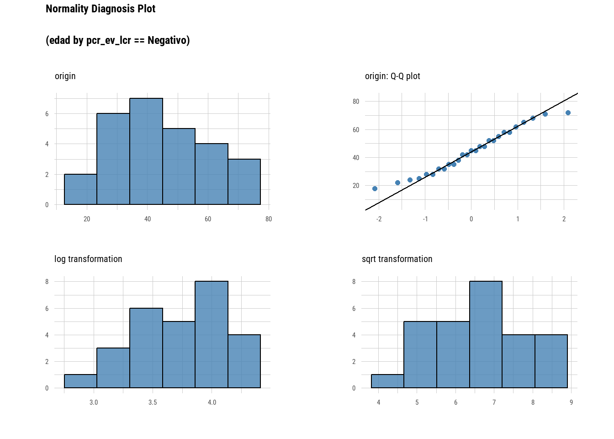
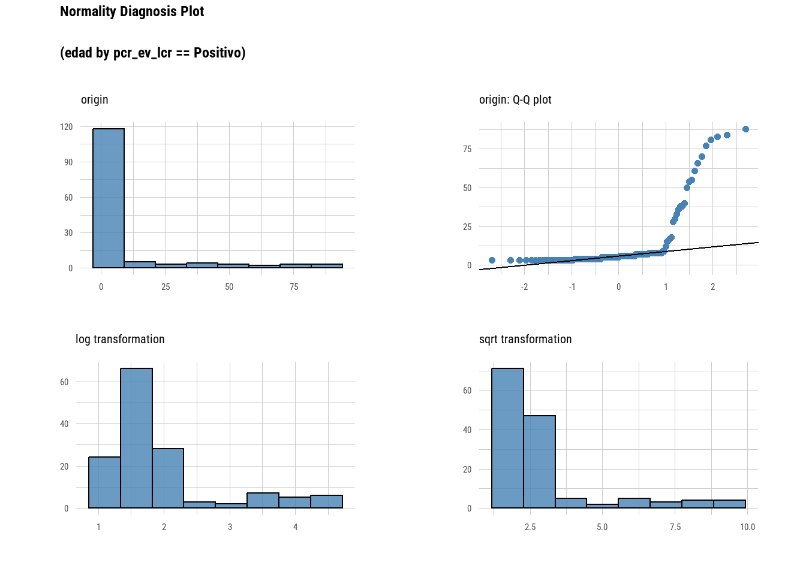

install.packages("rstatix", dependencies = TRUE)Introducción
En esta publicación hablaremos de las pruebas de hipótesis y su correlato en lenguaje R usando funciones del paquete rstatix (Kassambara 2025).
Si bien el R base incorpora de forma nativa muchas funciones estadísticas de test de hipótesis paramétricas y no paramétricas, este paquete proporciona un marco de trabajo sencillo e intuitivo, compatible con tuberías y coherente con la filosofía de diseño del tidyverse.
Sirve para realizar pruebas estadísticas básicas, incluyendo prueba \(t\) de Student, la prueba de Wilcoxon, ANOVA, Kruskal-Wallis y análisis de correlación, por ejemplo.
El resultado de cada prueba se transforma automáticamente en un dataframe ordenado para facilitar su visualización.
También es posible calcular varias métricas del tamaño del efecto, como el \(eta^2\) para el análisis de varianza (ANOVA), la \(d\) de Cohen para la prueba t y la \(V\) de Cramer para la asociación entre variables categóricas, entre otras. El paquete incluye funciones auxiliares para identificar valores atípicos univariados y multivariados, así como para evaluar la normalidad y la homogeneidad de las varianzas.
Actualmente está disponible en CRAN y se puede instalar ejecutando:
Su sitio es https://rpkgs.datanovia.com/rstatix/ y allí encontraran toda su documentación y otros ejemplos.
Ejemplo práctico
Tomemos un dataset con algunas variables para usar de ejemplo. En este caso tenemos el archivo Enterovirus.csv con 168 observaciones independientes de muestras de pacientes que se derivaron por el sistema de vigilancia y se procesaron en el laboratorio.
Vamos a leerla, luego de activar los paquetes necesarios.
library(rstatix)
library(dlookr)
library(tidyverse)
enterovirus <- read_csv2("enterovirus.csv")Su estructura es:
glimpse(enterovirus)Rows: 168
Columns: 6
$ ano <dbl> 2023, 2023, 2023, 2023, 2023, 2023, 2023, 2023, 2023, 2023,…
$ no_mtra <dbl> 1, 2, 3, 4, 5, 6, 7, 10, 11, 13, 14, 16, 17, 18, 19, 20, 21…
$ sexo <chr> "m", "m", "f", "f", "m", "f", "m", "m", "f", "f", "f", "m",…
$ dx <chr> "R27.0", "G03.9", "G04.9", "R27.0", "G31.9", "R51", "G04.9"…
$ edad <dbl> 45, 3, 5, 52, 68, 28, 4, 6, 22, 7, 58, 42, 3, 72, 5, 35, 48…
$ pcr_ev_lcr <chr> "Negativo", "Positivo", "Positivo", "Negativo", "Negativo",…Exploración descriptiva
La primera tarea que hacemos es explorar descriptivamente nuestra muestra.
rstatix ofrece una función llamada get_summary_stats() que nos informa de las medidas resumen de variables cuantitativas (como la edad de los pacientes) y al ser compatible con tidyverse podemos escribirla despues de estratificar por la variable categórica que nos interese. En nuestro caso esa será pcr_ev_lcr (tiene el resultado de la PCR de enterovirus en muestras de líquido cefalorraquideo).
enterovirus |>
group_by(pcr_ev_lcr) |>
get_summary_stats(edad, type = "common")# A tibble: 2 × 11
pcr_ev_lcr variable n min max median iqr mean sd se ci
<chr> <fct> <dbl> <dbl> <dbl> <dbl> <dbl> <dbl> <dbl> <dbl> <dbl>
1 Negativo edad 27 18 72 45 24.5 44.4 15.8 3.03 6.23
2 Positivo edad 141 3 88 5 4 12.0 18.6 1.57 3.10Observamos una diferencia de edad entre ambos grupos. La pregunta inferencial es si los datos aportan evidencia suficiente para considerar que esta diferencia es compatible con la hipótesis nula de ausencia de diferencia en la población.
Pruebas de hipótesis en variables cuantitativas
Para definir si podemos llevar adelante un proceso paramétrico como un \(t\) de Student para comparación de medias de 2 grupos independientes debemos conocer un poco mas sobre las distribuciones de la edad en cada grupo.
enterovirus |>
group_by(pcr_ev_lcr) |>
shapiro_test(edad)# A tibble: 2 × 4
pcr_ev_lcr variable statistic p
<chr> <chr> <dbl> <dbl>
1 Negativo edad 0.966 4.90e- 1
2 Positivo edad 0.500 6.46e-20En el grupo Negativo no encontramos evidencia estadísticamente significativa contra el supuesto de normalidad (p = 0,490). En cambio, en el grupo Positivo la prueba proporciona evidencia muy fuerte de que la distribución de la edad se aparta de una distribución Normal (p < 0,001).
Otra forma complementaria es generar un gráfico QQ-plot por cada grupo. Se puede hacer, por ejmplo con la función plot_normality() del paquete dlookr.
enterovirus |>
group_by(pcr_ev_lcr) |>
plot_normality(edad)Warning: The `size` argument of `element_line()` is deprecated as of ggplot2 3.4.0.
ℹ Please use the `linewidth` argument instead.
ℹ The deprecated feature was likely used in the dlookr package.
Please report the issue at <https://github.com/choonghyunryu/dlookr/issues>.

Evidentemente tenemos dos comportamientos en la distribución de los datos de edad bien diferentes. Por lo que, junto con la evaluación del tamaño muestral de los grupos concluimos que es más robusto usar métodos no paramétricos para comparar su distribución.
NoteImportante
Las pruebas de normalidad no deberían utilizarse como un mecanismo automático para decidir entre pruebas paramétricas y no paramétricas. La decisión debe considerar también el tamaño muestral, la forma de las distribuciones, la presencia de valores extremos y qué parámetro o característica de las distribuciones queremos comparar.
El test de Mann-Whitney U es el adecuado para este caso y en el paquete rstatix se encuentra dentro de wilcox_test() con su argumento paired = FALSE (valor predeterminado).
enterovirus |>
wilcox_test(formula = edad ~ pcr_ev_lcr) # sintaxis formula (edad segun grupos de pcr_ev_lcr)# A tibble: 1 × 7
.y. group1 group2 n1 n2 statistic p
* <chr> <chr> <chr> <int> <int> <dbl> <dbl>
1 edad Negativo Positivo 27 141 3484 6.82e-12Existe evidencia estadísticamente significativa de que la distribución de la edad difiere entre los pacientes con PCR positiva y negativa (p < 0,001).
En particular, la mediana de edad fue de 45 años en el grupo negativo y de 5 años en el grupo positivo.
Si a las funciones de pruebas de hipótesis de rstatix le activamos el argumento detailed nos darán mas información detallada (diferencia estimdad en la muestra -en este caso de la mediana-, intervalo de confianza, nombre del test e hipotesis alternativa)
enterovirus |>
wilcox_test(formula = edad ~ pcr_ev_lcr,
detailed = T) # A tibble: 1 × 12
estimate .y. group1 group2 n1 n2 statistic p conf.low conf.high
* <dbl> <chr> <chr> <chr> <int> <int> <dbl> <dbl> <dbl> <dbl>
1 35.0 edad Negat… Posit… 27 141 3484 6.82e-12 28.0 41.0
# ℹ 2 more variables: method <chr>, alternative <chr>Pruebas de hipótesis en variables cualitativas
Ahora pasemos a proporciones, por ejemplo hagamos una tabla de contingencia para respondernos cuantos pacientes son positivos y negativos segun sean mujeres o varones.
Antes de hacer la tabla, quitaremos los valores “sin datos” de sexo y, mediante un factor ordenaremos los valores de las categorías de pcr_ev_lcr.
enterovirus <- enterovirus |>
filter(sexo != "sin datos") |>
mutate(pcr_ev_lcr = factor(pcr_ev_lcr,
levels = c("Positivo", "Negativo")))tabla_contingencia <- xtabs(~ sexo + pcr_ev_lcr, # sintaxis fórmula
data = enterovirus)
tabla_contingencia pcr_ev_lcr
sexo Positivo Negativo
f 66 12
m 70 15Usamos la función xtabs() de R base que tiene una forma sencilla.
Queremos evaluar si existe evidencia de asociación entre el sexo y el resultado de la PCR. Bajo la hipótesis nula de independencia, podemos calcular las frecuencias esperadas y compararlas con las observadas.
Esto es aplicar el test de \(X^2\) (chi-cuadrado).
chisq_test(tabla_contingencia)# A tibble: 1 × 6
n statistic p df method p.signif
* <int> <dbl> <dbl> <int> <chr> <chr>
1 163 0.0314 0.859 1 Chi-square test ns En consecuencia, con estos datos no encontramos evidencia estadísticamente significativa de asociación entre sexo y resultado de la PCR.
Vamos a ver las frecuencias esperadas:
chi <- chisq_test(tabla_contingencia)
expected_freq(chi) pcr_ev_lcr
sexo Positivo Negativo
f 65.07975 12.92025
m 70.92025 14.07975Hasta aquí hemos evaluado si existe evidencia estadísticamente significativa de asociación entre el sexo y el resultado de la PCR. Pero el valor de p no nos informa acerca de la magnitud de esa asociación.
Una diferencia o asociación puede ser estadísticamente significativa y tener una magnitud pequeña, especialmente cuando trabajamos con muestras grandes. Del mismo modo, una asociación de cierta magnitud puede no alcanzar significación estadística cuando el tamaño de muestra es pequeño.
Por eso, además de realizar la prueba de hipótesis, resulta útil estimar el tamaño del efecto. Para tablas de contingencia podemos utilizar la V de Cramer, que cuantifica la intensidad de la asociación entre las variables categóricas.
cramer_v(tabla_contingencia)[1] 0.01388297La V de Cramer toma valores entre 0 y 1: valores próximos a 0 indican una asociación débil o inexistente y valores mayores indican asociaciones de mayor magnitud. No obstante, los puntos de corte para definir qué constituye un efecto pequeño, moderado o grande no son universales y deben interpretarse considerando el contexto y las características de la tabla.
En este caso, la V de Cramer es muy pequeña (0,014), lo que indica que la asociación observada entre sexo y resultado de la PCR es de magnitud muy baja.
Esto es coherente con lo observado en la prueba de χ²: además de no encontrar evidencia estadísticamente significativa de asociación (p = 0,859), la magnitud de la asociación observada es prácticamente nula.
El valor p y el tamaño del efecto no son lo mismo. El p-valor nos ayuda a evaluar la evidencia contra la hipótesis nula. La V de Cramer nos ayuda a cuantificar la magnitud de la asociación.
Por eso, informar únicamente el p-valor proporciona una descripción incompleta de los resultados.
En este ejemplo vimos dos situaciones diferentes: cuando queremos comparar una variable cuantitativa entre dos grupos independientes y cuando queremos evaluar la asociación entre dos variables categóricas. En ambos casos, rstatix permite mantener el análisis dentro del flujo de trabajo de tidyverse, pero la función que ejecutamos es solamente la última parte de un proceso que comienza con la pregunta de investigación, continúa con la exploración de los datos y termina con la interpretación del resultado.
Bibliografía
Kassambara, Alboukadel. 2025. Rstatix: Pipe-Friendly Framework for Basic Statistical Tests. https://doi.org/10.32614/CRAN.package.rstatix.